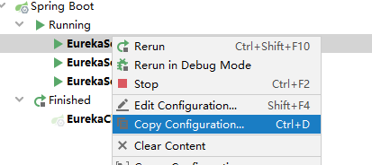
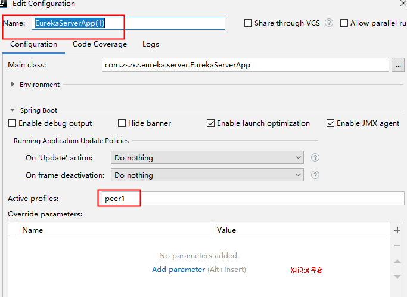
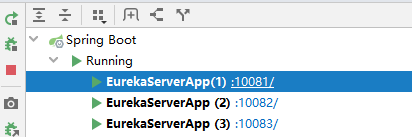
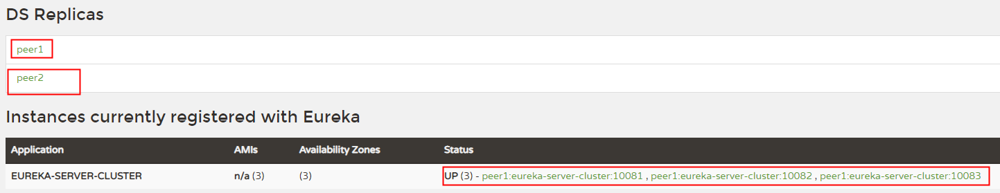
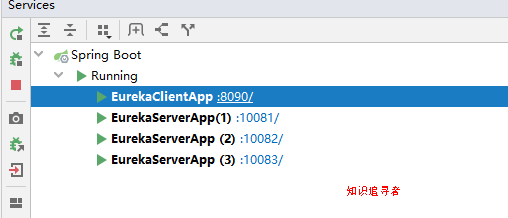
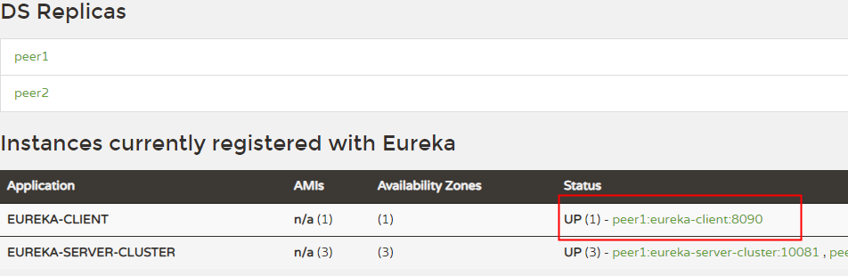
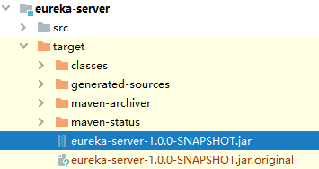
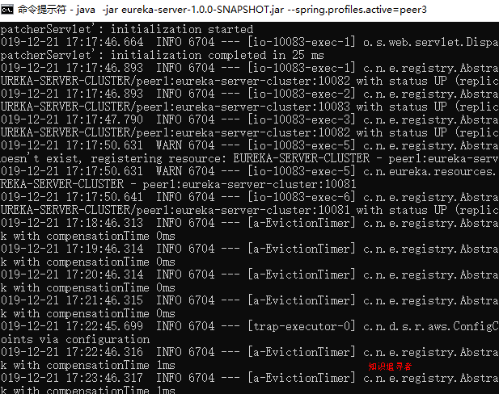
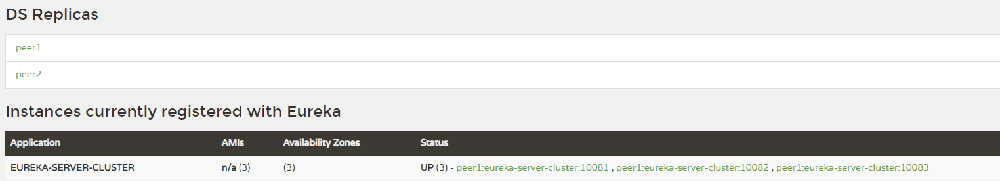

eureka作为注册中心，其充当着服务注册与发现功能，加载负载均衡；若在项目运行中eureka挂了，那么整个服务整体都会暂停，所以为服务运行的安全性，有必要搭建eureka集群；当其中一个eureka节点挂了，我们还有另外的节点可用；本篇文章的核心是如何在idea上运行eureka集群，和项目部署；需注意的jdk版本是1.8，高于jdk1.8打包部署会出问题，需要引入其他依赖；
之前的配置文件如下，这是单个eureka-server的配置，并不能满足于我们实际项目需求，我们要将其改造成高可用的集群节点模式；
server:
port: 10086
eureka:
instance:
hostname: localhost
client:
# 作为server，表示禁止向自己注册
register-with-eureka: false
fetch-registry: false
service-url:
defaultZone: http://${eureka.instance.hostname}:${server.port}/eureka/
改造配置文件如下，之前的文章中我们了解了eureka的peer to peer 交流机制，我们现在就根据这个原理搭建高可用的eureka集群，在配置文件中可以看见知识追寻者配置了3个peer（peer1,peer2,peer3）； 它们的端口分别是10081,10082,10083; peer1,分别向 peer2,peer3注册，peer2则向 peer1,peer3注册，peer3同理；这样就构成了eureka简单的3个节点集群；
spring:
application:
name: eureka-server-cluster
---
spring:
profiles: peer1
server:
port: 10081
eureka:
instance:
hostname: peer1
client:
service-url:
# 向peer2 peer3节点注册自己
defaultZone: http://peer2:10082/eureka,http://peer3:10083/eureka
---
spring:
profiles: peer2
server:
port: 10082
eureka:
instance:
hostname: peer2
client:
service-url:
# 向peer1 pee3节点注册自己
defaultZone: http://peer1:10081/eureka,http://peer3:10083/eureka
---
spring:
profiles: peer3
server:
port: 10083
eureka:
instance:
hostname: peer3
client:
service-url:
# 向peer1 peer2节点注册自己
defaultZone: http://peer1:10081/eureka,http://peer2:10082/eureka在之前的基础上多添加了注册server节点 peer2,peer3
server:
port: 8090
spring:
application:
name: eureka-client # 应用名称
eureka:
client:
service-url:
# 服务注册地址
defaultZone: http://peer1:10081/eureka/,http://peer2:10082/eureka/,http://peer3:10083/eureka/修改host文件目的是peer对应ip地址，实际项目中 每个peer节点都是一个ip地址；
192.168.0.101 peer1
192.168.0.101 peer2
192.168.0.101 peer3复制配置如下：点击 cpoy configuration 选项；

进入编辑状态，修改 name 为 EurekaServer(1), 激活的配置文件选项 填 peer1；以此类推，我们复制三个实例； 分别是 EurekaServer(1)，EurekaServer(2)，EurekaServer(3)；分别激活配置 peer2,peer2,peer3;

分别启动三个配置实例，图如下；

浏览器输入 http://localhost:10083/ 或者 http://localhost:10082/ 或者 http://localhost:10081/；结果如下，知识追寻者在浏览器输入的 peer3地址，那么 对应的复制的Node 是 peer2,peer1；server有三个；

启动eureka client 图如下

刷新浏览器界面，可以看见 client 已经注册到 server；

进入 eureka-server 工程目录 执行 打包命令 mvn clean package

打开三个命令行分别执行对应的命令，一个cmd一条；
java -jar eureka-server-1.0.0-SNAPSHOT.jar --spring.profiles.active=peer1
java -jar eureka-server-1.0.0-SNAPSHOT.jar --spring.profiles.active=peer2
java -jar eureka-server-1.0.0-SNAPSHOT.jar --spring.profiles.active=peer3pee3 如下

浏览器页面如下：

如下 配置文件 不写在src/main/resources一个 application 中，而是分为 application-peer1.yml, application-peer2.yml, application-peer3.yml ; 在 idea 的虚拟机参数（VM Options）配置 是
-Dspring.profiles.active=peer1 ， -Dspring.profiles.active=peer2 ，-Dspring.profiles.active=peer3；部署方式相同；也可以通过 mvn spring-boot:run -Dspring.profiles.active=peer1 的形式运行；